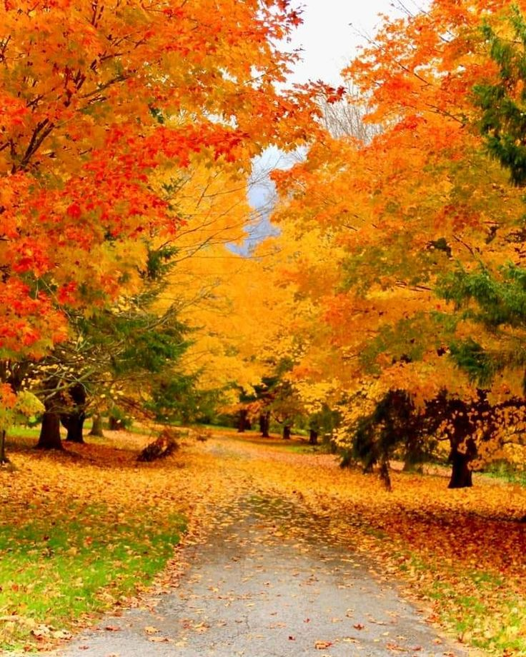

осень

Поспевает брусника,
Стали дни холоднее,
И от птичьего крика
В сердце стало грустнее.
Стаи птиц улетают
Прочь, за синее море.
Все деревья блистают
В разноцветном уборе.
Солнце реже смеётся,
Нет в цветах благовонья.
Скоро Осень проснётся
И заплачет спросонья.